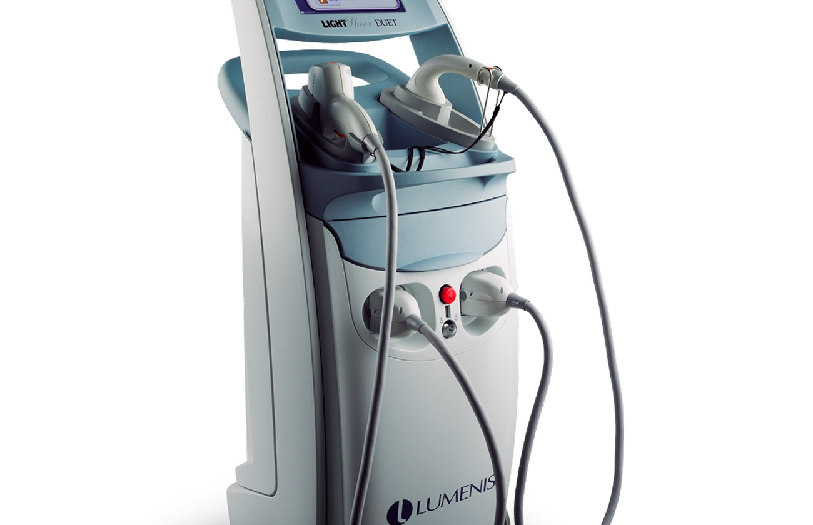
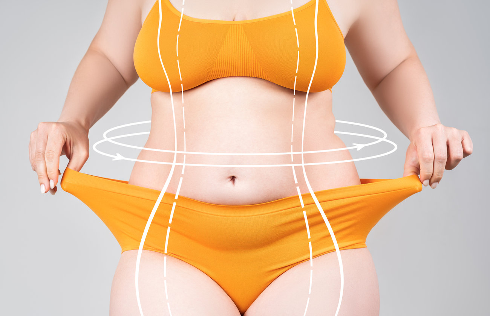

Wiedza + Inspiracje
Blog INSTYTUTem.™
Praktyczna wiedza o skórze, zabiegach i pielęgnacji — prosto od kosmetologa, bez marketingowego żargonu. Odpowiedzi na pytania, które najczęściej słyszymy na konsultacjach w INSTYTUTem.™, spisane przez mgr Ewelinę Majchrzak.

Jaki laser do depilacji jest najskuteczniejszy? Ranking 2026

Przebarwienia skóry – jak je usuwać i zapobiegać? Skuteczne metody [2025]

Prawidłowa ilość tkanki tłuszczowej w organizmie – jak ją osiągnąć i utrzymać?
Jak znaleźć czas na regularne zabiegi kosmetyczne?
Pielęgnacja skóry dojrzałej po 40. roku życia
Jak powiększyć usta?

Skuteczne sposoby na pozbycie się drugiego podbródka
Jak oczyścić skórę twarzy?

Jak się pozbyć zaskórników?

Jak szybko i skutecznie pozbyć się cellulitu?

Dlaczego warto poddać się zabiegowi depilacji laserowej twarzy?